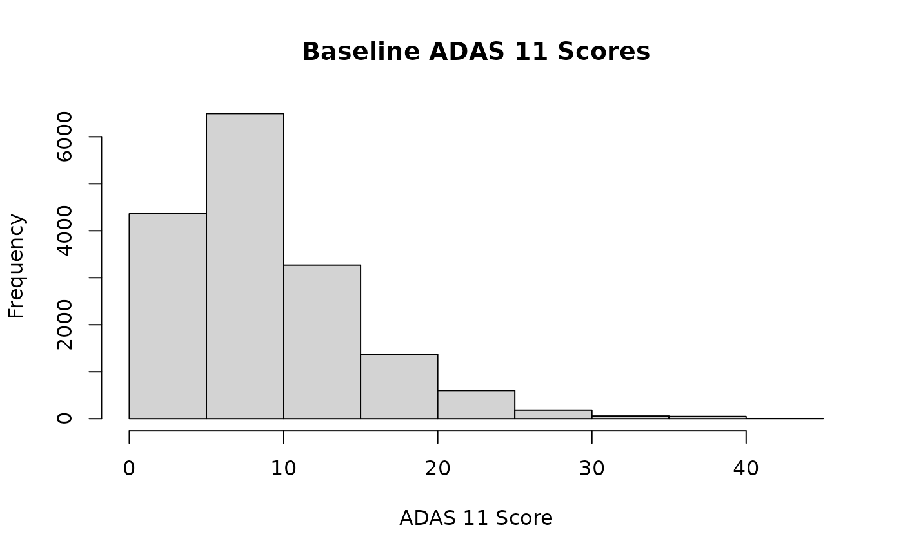

Introduction to ADNIMetabo
Dany Mukesha
Université Côte d’Azurdanymukesha@gmail.com
18 December 2024
Source:vignettes/ADNIMetabo.Rmd
ADNIMetabo.RmdAbstract
We provide a collection of datasets from the Alzheimer’s Disease Neuroimaging Initiative (ADNI), a landmark study aimed at understanding the progression of Alzheimer’s disease. This package includes various types of data, such as demographic information, clinical assessments, biomarker measurements, imaging data, and cognitive composite scores. The datasets are carefully curated and documented to facilitate easy access and analysis for researchers and clinicians. This vignette guides users through the process of loading and utilizing these datasets, providing examples of how to explore and analyze the data.Introduction
Alzheimer’s disease is a complex and multifactorial neurodegenerative
disorder that affects millions of people worldwide. The Alzheimer’s
Disease Neuroimaging Initiative (ADNI) is a multisite study launched in
2003 to collect and share data that can help researchers understand the
progression of Alzheimer’s disease. The ADNIMetabo package
is developed to make the ADNI datasets readily available and easily
accessible for analysis.
In this package, it includes a range of datasets, each focusing on different aspects of the ADNI study:
- Demographic data: Participant demographic information such as age, sex, education, ethnicity, and marital status.
- Clinical assessments: Baseline and follow-up clinical data, including diagnosis, CDR-SB, ADAS scores, MMSE, and RAVLT scores.
- Biomarker data: Measurements of CSF ABETA, TAU, PTAU, FDG-PET, PIB, and AV45.
- Imaging data: MRI field strength, FreeSurfer software version, and various brain region volumes.
- Cognitive domposite scores: ADNI modified Preclinical Alzheimer’s Cognitive Composite (PACC) scores with Digit Symbol Substitution and Trails B.
- ECog scores: ECog scores for both participants and study partners.
This document will walk you through the steps to install and load the
ADNIMetabo package, access the different datasets, and
provide examples of how to explore and analyze the data. It is intended
to serve as a guide for researchers, clinicians, and students who are
interested in using the ADNI datasets for their studies.
We hope that by using the ADNIMetabo package, users can
take advantage of the extensive and well-curated datasets from the ADNI
study to advance our understanding of Alzheimer’s disease and contribute
to the development of diagnostic and therapeutic strategies.
Let’s start with get access to various datasets from ADNI:
devtools::install_github("danymukesha/ADNIData") #for installation
library(ADNIMetabo)
data("demographic_data", package = "ADNIMetabo")
data("baseline_clinical_data", package = "ADNIMetabo")
data("follow_up_clinical_data", package = "ADNIMetabo")
data("biomarker_data", package = "ADNIMetabo")
data("imaging_data", package = "ADNIMetabo")
data("cognitive_composite_data", package = "ADNIMetabo")
data("ecog_scores_data", package = "ADNIMetabo")Exploring the datasets
an example of how you can explore the demographic data:
head(demographic_data)
#> RID AGE PTGENDER PTEDUCAT PTETHCAT PTRACCAT PTMARRY
#> 1 2 74.3 Male 16 Not Hisp/Latino White Married
#> 2 3 81.3 Male 18 Not Hisp/Latino White Married
#> 3 3 81.3 Male 18 Not Hisp/Latino White Married
#> 4 3 81.3 Male 18 Not Hisp/Latino White Married
#> 5 3 81.3 Male 18 Not Hisp/Latino White Married
#> 6 4 67.5 Male 10 Hisp/Latino White MarriedShort analysis
Demographic summary
# summarize age and education
summary(demographic_data$AGE)
#> Min. 1st Qu. Median Mean 3rd Qu. Max. NA's
#> 50.40 68.50 73.20 73.21 78.10 91.40 9
summary(demographic_data$PTEDUCAT)
#> Min. 1st Qu. Median Mean 3rd Qu. Max.
#> 4.00 14.00 16.00 16.11 18.00 20.00
# count the number of participants by sex and ethnicity
table(demographic_data$PTGENDER)
#>
#> Female Male
#> 7440 8981
table(demographic_data$PTETHCAT)
#>
#> Hisp/Latino Not Hisp/Latino Unknown
#> 550 15798 73Clinical assessments
# summarize baseline CDR-SB and MMSE scores
summary(baseline_clinical_data$CDRSB_bl)
#> Min. 1st Qu. Median Mean 3rd Qu. Max.
#> 0.000 0.000 0.500 1.215 2.000 10.000
summary(baseline_clinical_data$MMSE_bl)
#> Min. 1st Qu. Median Mean 3rd Qu. Max. NA's
#> 16.00 26.00 29.00 27.76 30.00 30.00 2
# plot the distribution of baseline ADAS 11 scores
hist(baseline_clinical_data$ADAS11_bl, main = "Baseline ADAS 11 Scores", xlab = "ADAS 11 Score")
Biomarker analysis
# summarize CSF ABETA and TAU levels
summary(biomarker_data$ABETA)
#> Length Class Mode
#> 16421 character character
summary(biomarker_data$TAU)
#> Length Class Mode
#> 16421 character character
# plot the relationship between CSF ABETA and TAU
plot(biomarker_data$ABETA, biomarker_data$TAU, main = "CSF ABETA vs TAU", xlab = "CSF ABETA", ylab = "CSF TAU")
#> Warning in xy.coords(x, y, xlabel, ylabel, log): NAs introduced by coercion
#> Warning in xy.coords(x, y, xlabel, ylabel, log): NAs introduced by coercionShort message
The ADNIMetabo package will provide a set of datasets
from the ADNI study, making it easier to analyze and understand the
progression of Alzheimer’s disease. This vignette has shown you how to
load and explore these datasets, a nd how to perform basic analyses.
For more detailed documentation on each dataset, please refer to the respective help files:
?demographic_data
?baseline_clinical_data
?follow_up_clinical_data
?biomarker_data
?imaging_data
?cognitive_composite_data
?ecog_scores_dataAcknowledgments
The data included in this package is from the Alzheimer’s Disease Neuroimaging Initiative (ADNI) database. ADNI is a multisite study launched in 2003 by the National Institute on Aging (NIA), the National Institute of Biomedical Imaging and Bioengineering (NIBIB), the Food and Drug Administration (FDA), private pharmaceutical companies, and non-profit organizations.
#> ─ Session info ───────────────────────────────────────────────────────────────────────────────────────────────────────
#> setting value
#> version R version 4.4.2 (2024-10-31)
#> os Ubuntu 24.04.1 LTS
#> system x86_64, linux-gnu
#> ui X11
#> language en
#> collate C.UTF-8
#> ctype C.UTF-8
#> tz UTC
#> date 2024-12-18
#> pandoc 3.1.11 @ /opt/hostedtoolcache/pandoc/3.1.11/x64/ (via rmarkdown)
#>
#> ─ Packages ───────────────────────────────────────────────────────────────────────────────────────────────────────────
#> package * version date (UTC) lib source
#> ADNIMetabo * 0.99.0 2024-12-18 [1] local
#> BiocManager 1.30.25 2024-08-28 [1] RSPM
#> BiocStyle * 2.34.0 2024-10-29 [1] Bioconduc~
#> bookdown 0.41 2024-10-16 [1] RSPM
#> bslib 0.8.0 2024-07-29 [1] RSPM
#> cachem 1.1.0 2024-05-16 [1] RSPM
#> cli 3.6.3 2024-06-21 [1] RSPM
#> desc 1.4.3 2023-12-10 [1] RSPM
#> digest 0.6.37 2024-08-19 [1] RSPM
#> evaluate 1.0.1 2024-10-10 [1] RSPM
#> fastmap 1.2.0 2024-05-15 [1] RSPM
#> fs 1.6.5 2024-10-30 [1] RSPM
#> htmltools 0.5.8.1 2024-04-04 [1] RSPM
#> jquerylib 0.1.4 2021-04-26 [1] RSPM
#> jsonlite 1.8.9 2024-09-20 [1] RSPM
#> knitr 1.49 2024-11-08 [1] RSPM
#> lifecycle 1.0.4 2023-11-07 [1] RSPM
#> pkgdown 2.1.1 2024-09-17 [1] any (@2.1.1)
#> R6 2.5.1 2021-08-19 [1] RSPM
#> ragg 1.3.3 2024-09-11 [1] RSPM
#> rlang 1.1.4 2024-06-04 [1] RSPM
#> rmarkdown 2.29 2024-11-04 [1] RSPM
#> sass 0.4.9 2024-03-15 [1] RSPM
#> sessioninfo * 1.2.2 2021-12-06 [1] RSPM
#> systemfonts 1.1.0 2024-05-15 [1] RSPM
#> textshaping 0.4.1 2024-12-06 [1] RSPM
#> xfun 0.49 2024-10-31 [1] RSPM
#> yaml 2.3.10 2024-07-26 [1] RSPM
#>
#> [1] /home/runner/work/_temp/Library
#> [2] /opt/R/4.4.2/lib/R/site-library
#> [3] /opt/R/4.4.2/lib/R/library
#>
#> ──────────────────────────────────────────────────────────────────────────────────────────────────────────────────────